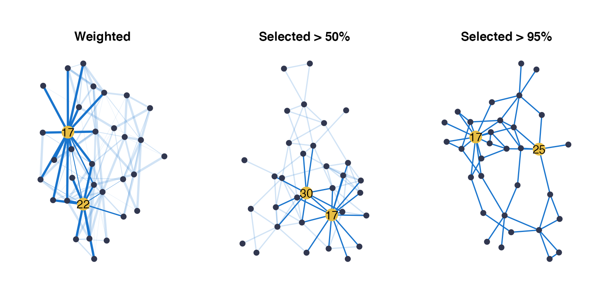
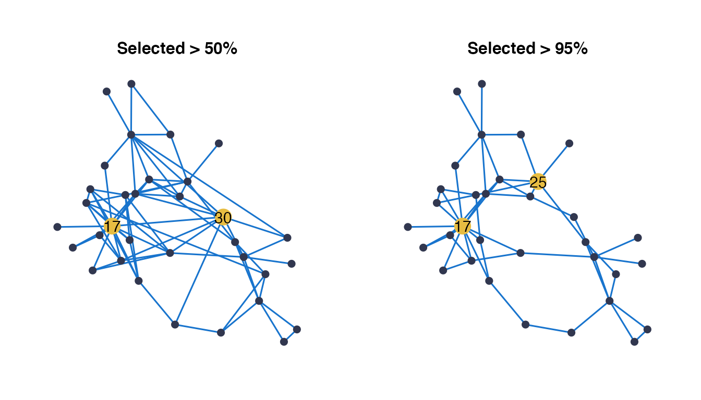
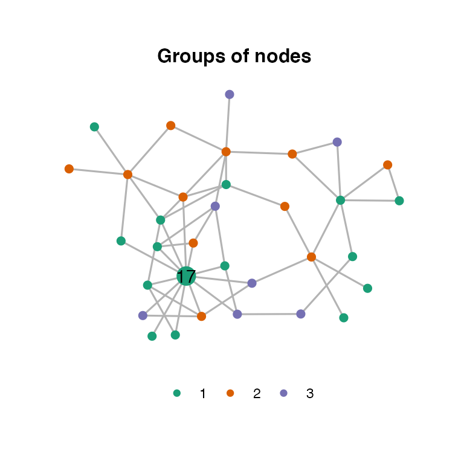
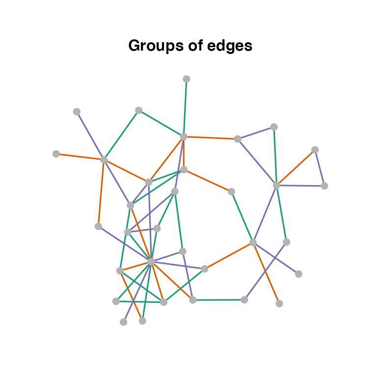

Fatala_Net.RmdThis vignette details how to infer a network, using fishes counts from the Fatala River (Barans95 data from the ade4 package), and shows how to represent a network with the EMtree package.
The data is composed of 33 species abundances measures in 95 samples.
library(ade4)
library(tibble)
data(baran95)
Y = as.matrix(baran95$fau)
n = nrow(Y)
p = ncol(Y)
head(Y[,1:5])## AMA CAS CHI CHL CJO
## 1 0 2 0 3 0
## 2 0 1 0 0 0
## 3 0 2 0 3 0
## 4 0 0 0 2 0
## 5 0 0 0 0 0
## 6 0 0 0 0 0
str(Y)## int [1:95, 1:33] 0 0 0 0 0 0 0 0 0 0 ...
## - attr(*, "dimnames")=List of 2
## ..$ : chr [1:95] "1" "2" "3" "4" ...
## ..$ : chr [1:33] "AMA" "CAS" "CHI" "CHL" ...The available covariates are the site and date of the samples. At each date and site, 4 samples were measured, except for kilometer 03 of January 93.
## tibble [95 × 2] (S3: tbl_df/tbl/data.frame)
## $ date: Factor w/ 6 levels "apr93","jun93",..: 1 1 1 1 1 1 1 1 1 1 ...
## $ site: Factor w/ 4 levels "km03","km17",..: 1 1 1 1 2 2 2 2 3 3 ...
table(X$date, X$site)##
## km03 km17 km33 km46
## apr93 4 4 4 4
## jun93 3 4 4 4
## aug93 4 4 4 4
## oct93 4 4 4 4
## dec93 4 4 4 4
## feb94 4 4 4 4When dealing with abundance data, most modelling approaches switch back to the Gaussian space using different methods. EMtree is an inference procedure which only requires an estimate of a Gaussian covariance matrix, and can be used with any model which either use Gaussian latent variables, Gaussian copulas, or Gaussian data transformations.
The Poisson log-normal model, implemented and estimated in the PLNmodels package, is easy to use and can handle both covariates and offsets efficiently. Details on covariates and offsets specification can be found here. For this example we use PLNmodels, however the user is free to provide a Gaussian correlation estimate as an input.
We create a PLNmodels object:
##
## Initialization...
## Adjusting a PLN model with full covariance model
## Post-treatments...
## DONE!And then run EMtree as follows:
##
## Convergence took 0.4 secs and 14 iterations.
str(EMtreeFit)## List of 6
## $ edges_prob : num [1:33, 1:33] 0.00 8.71e-10 3.50e-08 4.28e-05 3.85e-08 ...
## $ norm.cst : num 3.39e-12
## $ timeEM : 'difftime' num 0.403653144836426
## ..- attr(*, "units")= chr "secs"
## $ edges_weight: num [1:33, 1:33] 0.00 8.01e-06 4.31e-06 5.93e-04 1.15e-05 ...
## $ logpY : num [1:14] 195 227 236 240 242 ...
## $ maxIter : num 14The output matrix edges_prob gathers the probabilities for each edge to be part of the latent random tree of the model. By construction, this matrix is constrained to sum to \((p-1)\) (number of edges in a spanning tree), and to have an average value of \(2/p\).
This package involves a lot of switching between symmetric matrices and the vector of their upper triangular part. The functions ToVec() and ToSym() help to transition from one representation to the other.
## [1] 6.758483e-15
sum(vec_of_proba) - (p-1)## [1] 3.566925e-12To obtain a network and select edges, we resort to a stability selection strategy.
The function ResampleEMtree() implements a stability selection of EMtree on S sub-samples. This function uses parallel computations with mclapply(). The Pmat output gathers all the inferred edges probabilities for each sub-sample ; it is a stack of each ToVec(EMtreeFit$edges_prob).
ResampEmtreeFit<-ResampleEMtree(counts=Y, covar_matrix = X$site , S=5, maxIter=10,cond.tol=1e-8, cores=1)## Computing 5 probability matrices with 1 core(s)...
## Convergence took 0.55 secs and 10 iterations.
## Convergence took 0.34 secs and 10 iterations.
## Convergence took 0.32 secs and 10 iterations.
## Convergence took 0.31 secs and 10 iterations.
## Convergence took 0.36 secs and 10 iterations.2.48 secs
str(ResampEmtreeFit)## List of 3
## $ Pmat : num [1:5, 1:528] 6.59e-09 3.18e-08 3.35e-08 3.95e-09 1.58e-07 ...
## $ maxIter: num [1:5] 10 10 10 10 10
## $ times : 'difftime' num [1:5] 0.553413152694702 0.344007968902588 0.315392017364502 0.310241937637329 ...
## ..- attr(*, "units")= chr "secs"Another way to specify the covariates matrix is to use the model.matrix() function as follows:
built_covar_matrix=model.matrix(~X$site+X$date)Then built_covar_matrix would be the covar_matrix parameter.
The ResampleEMtree() function can be used with another model than PLN. To do this, simply provide a function which estimates a Gaussian correlation matrix from counts (using latent variables, copulas or transformations). The function should be passed to ResampleEMtree() through the user_covariance_estimation parameter. The covariate matrix will also be a parameter to the user’s function. An example using a dummy estimation is available in the help of ResampleEMtree().
For the sake of the example we continue with PLN and the “site” covariate only. Edges selection frequencies can be derived from the Pmat output with the function freq_selec(). This function simply summarizes the number of times an edge has a probability above the threshold Pt. A network can then be obtained by thresholding the frequencies, to keep for example edges that are selected in more than \(80\%\) of sub-samples:
freqs<-freq_selec(ResampEmtreeFit$Pmat,Pt=0.2)
a_first_idea_of_network<-1*(freqs>0.8)The problem of course is that there is no rationale for the threshold on probabilities Pt ; the optimal threshold is unknown. A way to select the threshold is to compute the stability of the frequencies for any threshold, and then select the desired stability. The function StATS() adapts the well-known penalty selection strategy StARS in the context of threshold selection.
stab_selection=StATS(ResampEmtreeFit$Pmat, nlambda=50, stab.thresh=0.9,plot=TRUE)We then keep the frequencies corresponding to the optimal lambda value, which is here at about \(exp(-9.5)\). The optimal frequencies are stored in stab_selection$freqs_opt, the optimal threshold is stab_selection$lambda_opt.
The optimal frequencies still need to be thresholded in order to obtain a network. However, the task is very much simpler to understand now: the higher the frequency, the more stable the edge along the resamples.
The package EMtree has one general plotting function for network visualization: draw_network(). It builds from the ggraph and tidygraph packages, and provides with several interesting functionalities, among which:
For this section we consider three networks from the previous inference: the weighted network with all edges selection frequencies, the network obtained when applying a 0.5 threshold on frequencies, and finally the one obtained with a threshold of 0.95.
weighted_net=ToSym(stab_selection$freqs_opt)
net_50=ToSym(1*(stab_selection$freqs_opt>0.5))
net_95=ToSym(1*(stab_selection$freqs_opt>0.95))The function draw_network() takes a possibly weighted adjacency matrix as input, and represents a network with edges widths proportional to the input weights. Several layouts are available (among which nicely, kk, fr, circle, stress… See igraph documentation or this blogpost). Highlighting of nodes possessing among the highest betweenness centrality measure is done with the parameter btw_rank. To disable this functionality, just set btw_rank=1.
shade=TRUE lowers the opacity of edges not linked to a highlighted node. This allows to better see the direct neighborhood of important nodes.
g1<-draw_network(weighted_net,title="Weighted", pal_edges="dodgerblue3",layout="stress",
shade = TRUE, btw_rank=3)$G
g2<-draw_network(net_50,title="Selected > 50%", pal_edges="dodgerblue3",layout="kk",
shade = TRUE, btw_rank=3)$G
g3<-draw_network(net_95,title="Selected > 90%", pal_edges="dodgerblue3",layout="fr",
shade = FALSE, btw_rank=3)
grid.arrange(g1, g2, g3$G, ncol=3)
To store a layout, we need to create it first, using the ggraph package for example.
a_layout = create_layout(net_95, layout="nicely") %>% data.frame()Then the layout is taken as the stored_layout parameter of draw_network(), as follows:
args=list( pal_edges="dodgerblue3")
g1<-draw_network(net_50,title="Selected > 50%", pal_edges="dodgerblue3",
stored_layout = a_layout, btw_rank=3)$G
g2<-draw_network(net_95,title="Selected > 95%", pal_edges="dodgerblue3",
stored_layout = a_layout, btw_rank=3)$G
grid.arrange(g1, g2, ncol=2)
It is possible to define groups of nodes and edges with node_groups and edge_groups respectively, and color them accordingly using pal_nodes and pal_edges. For example :
draw_network(net_95, title="Groups of nodes", pal_edges="gray70",
node_groups=sample(3,p, replace=TRUE),
pal_nodes=brewer.pal(3,"Dark2"),layout="stress")$G
draw_network(net_95, title="Groups of edges", pal_nodes="gray70",
edge_groups=ToSym(sample(3,p*(p-1)/2,replace=TRUE)),
pal_edges=brewer.pal(3,"Dark2"),layout="stress", btw_rank=1)$G
The draw_network() function outputs the graph G, but also graph_data, which is in igraph format and thus useful if you would like to use your own graphic representation, or another package like networkD3 for example.
In the example below, we first create a graph object with nodes labels as the species names. We then extract the edges and nodes information following the tidygraph grammar, and store them in data frames. Edges information are modified so that they are zero-indexed, which is necessary for JavaScript. Finally we use the networkD3::forceNetwork() function to obtain an interactive network, where we colored nodes according to their degree.
library(networkD3)
graph<-draw_network(net_95,nodes_label = baran95$species.names)
edges_data=graph$graph_data %>% activate(edges) %>% as_tibble() %>%
mutate(from=from-1, to = to-1) %>% data.frame()
nodes_data=graph$graph_data %>% activate(nodes) %>% data.frame()
forceNetwork(Links = edges_data, Nodes =nodes_data,
Source = 'from', Target = 'to',
NodeID = 'name', Group = 'deg',opacity = 1,fontSize = 15, legend=TRUE)Another way to do this is to use the networkD3::igraph_to_networkD3(), which takes advantage of the igraph nature of the graph_data output. It gives the right format and automatically re-index the edges, but requires to manually add the degrees or any other information on node and edges.
degrees=graph$graph_data %>% activate(nodes) %>% dplyr::select(deg) %>% pull()
graph_d3 <- igraph_to_networkD3(graph$graph_data, group=degrees)
forceNetwork(Links = graph_d3$links, Nodes =graph_d3$nodes,
Source = 'source', Target = 'target',
NodeID = 'name', Group = 'group',opacity = 1,fontSize = 15, legend=TRUE)